PIXELCRAFT visual quality audit · 2026-11-09T00:53:38+00:00 · method pixelcraft-1.0
GITCRAFT 3D Department UI (/)
/home/user/GITCRAFT/forgecraft/ui/dist
resolved 1 · new 0 · regressions 0 · coverage lost: none · details at the end of the report
Confidence: only automatic journeys (no task-specific journeys with expected taps); canvas-rendered screens: the DOM does not describe what is drawn; browser emulation only (no physical-device evidence). Coverage and confidence are separate from quality; nothing is capped or awarded for code existing.
2 · Category scores
| Category | Area | Points | Awarded | Weakest metric | Evidence |
|---|---|---|---|---|---|
| Visual Quality | Spacing and rhythm | 25 | 17.7 | related elements evenly spaced · 44% | measured ×128 |
| Visual Quality | Layout and composition | 25 | 23.6 | text not truncated · 43% | measured ×237 |
| Visual Quality | Typography and hierarchy | 20 | 11.9 | text large enough to read · 38% | measured ×144 |
| Visual Quality | Buttons and controls | 20 | 11.2 | neighbouring targets not crowded · 18% | measured ×161 |
| Visual Quality | Visual consistency | 10 | 10 | controls share radii and a small palette · 100% | measured ×66 |
| Usability | Interaction efficiency | 25 | 25 | journeys complete · 100% | measured ×20 |
| Usability | Navigation and discoverability | 20 | 12 | navigation stays in the same place on every screen · 0% | measured ×19 |
| Usability | Mobile ergonomics | 25 | 21 | inputs do not trigger iOS zoom · 8% | measured ×135 |
| Usability | Feedback and interaction states | 15 | 9.4 | controls react to hover · 12% | measured ×38 |
| Usability | Accessibility | 15 | 14.8 | axe-core WCAG 2.2 AA checks · 96% | accessibility ×36, measured ×12 |
| Consistency | Cross-screen consistency | 25 | 0.4 | primary buttons look the same on every screen · 0% | measured ×12 |
| Consistency | Component consistency | 25 | 19.8 | inputs share one height · 70% | measured ×12 |
| Consistency | Responsive consistency | 20 | 16.7 | the same content at every size · 50% | measured ×12 |
| Consistency | Design system adherence | 20 | 7.3 | font sizes from a scale · 0% | measured ×24 |
| Consistency | State consistency | 10 | 6.4 | pressed treatment applied consistently · 28% | measured ×4 |
3 · Strongest screens
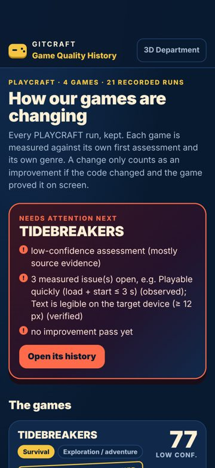
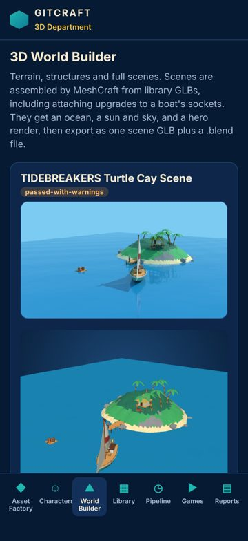
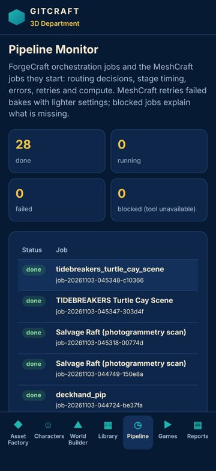
4 · Weakest screens
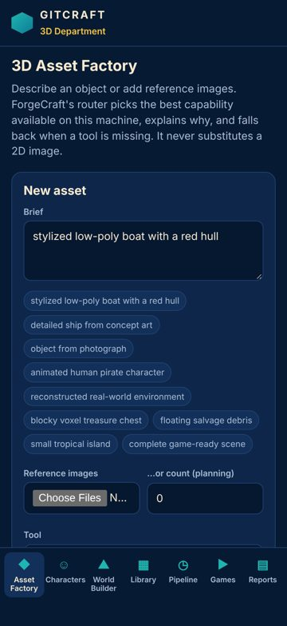
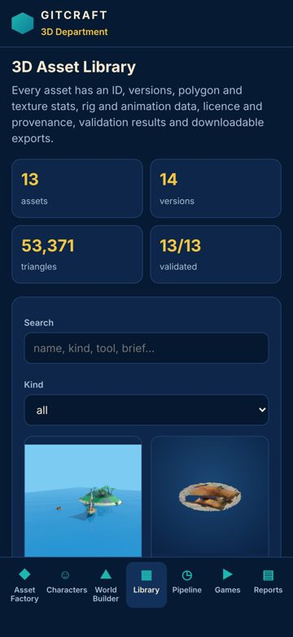
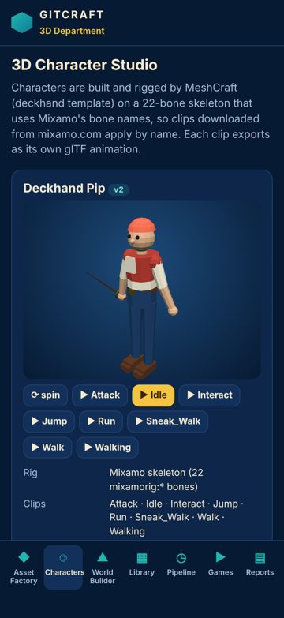
5 · Critical usability defects
Focusing a field zooms the page on iPhone
major Measured (rendered DOM)seen 20×fix now
The field's font-size is 15 px; iOS Safari zooms in on any input under 16 px and leaves the page zoomed after typing.
Fix: Use font-size: 16px (1rem) for inputs, selects and textareas on mobile.
Where and what was measured
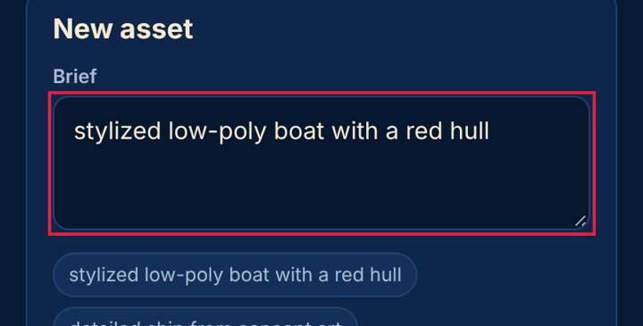
No pressed (active) state
major Measured (rendered DOM)seen 12×fix now
Pressing this control changes nothing visually until the action completes; on touch screens there is no hover, so this is the only immediate confirmation of a tap.
Fix: Add an :active style (darker tone, scale 0.97, or ripple) to every button and link variant.
Where and what was measured
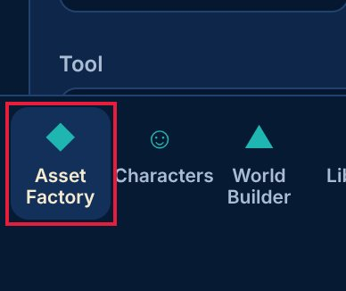
Clickable element is not a real control
major Measured (rendered DOM)seen 4×fix now
This element responds to clicks (pointer cursor) but is not a button or link, so keyboard and screen-reader users cannot use it.
Fix: Use <button> (or <a href>) instead of a clickable <div>/<span>.
Where and what was measured
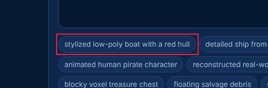
Accessibility: Scrollable region must have keyboard access
major Accessibility (axe-core)seen 1×polish
axe-core rule scrollable-region-focusable (wcag2a, wcag211, wcag213): Scrollable region must have keyboard access.
Fix: See https://dequeuniversity.com/rules/axe/4.10/scrollable-region-focusable?application=axeAPI — Fix any of the following: Element should have focusable content Element should be focusable
Where and what was measured
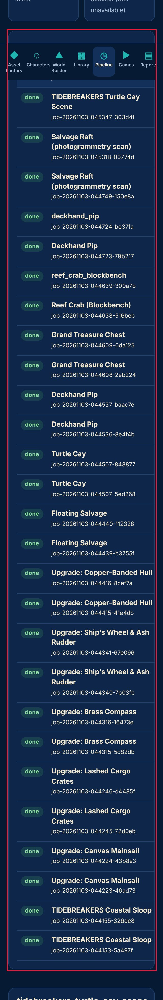
6 · Spacing and layout defects
Text is too small to read comfortably
major Measured (rendered DOM)seen 31×fix now
10.5-px text is below the 12-px minimum for phones; secondary information (dates, tags, captions) becomes hard to read.
Fix: Use at least 12 px (13-14 px preferred) for secondary text and keep hierarchy with weight and colour rather than very small sizes.
Where and what was measured
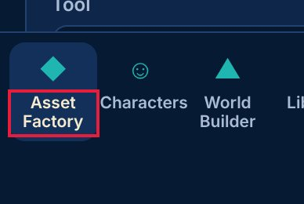
Lines of text are too long
minor Measured (rendered DOM)seen 17×fix now
About 100 characters per line; beyond ~80 the eye loses its place.
Fix: Cap text columns at 60-75ch (max-width: 70ch).
Where and what was measured
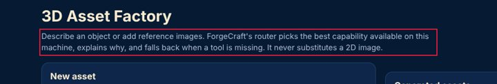
Uneven spacing between related elements
major Measured (rendered DOM)seen 6×fix now
Items of the same kind in one list or stack are separated by different gaps, which reads as grouping that isn't there and makes the list look broken.
Fix: Give the container one gap (flex/grid `gap`, or one margin rule for all items) instead of per-item margins.
Where and what was measured
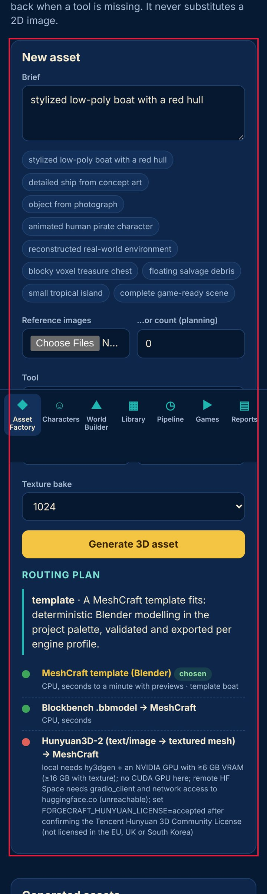
Text is truncated
minor Measured (rendered DOM)seen 11×fix now
Content is cut off with an ellipsis or clipped; on phones important words (task names, prices) disappear.
Fix: Allow two lines (line-clamp: 2) for primary labels, or give the label the space the trailing controls take.
Where and what was measured
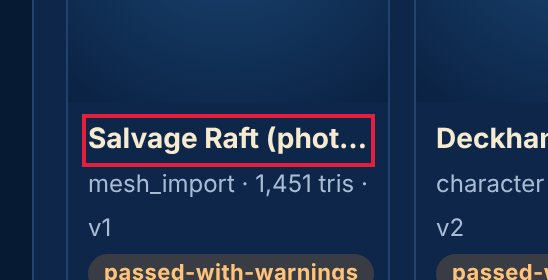
Text is cramped against the edge of its box
minor Measured (rendered DOM)seen 10×fix now
Text inside a filled or bordered box sits within a few pixels of the edge, which looks unfinished.
Fix: Give boxed text at least 8 px horizontal and 4 px vertical padding (12-16 px for cards).
Where and what was measured
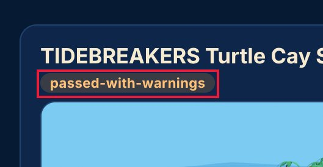
Spacing does not follow a consistent scale
minor Measured (rendered DOM)seen 10×next
Paddings, gaps and margins use many unrelated values, so the rhythm between elements looks accidental rather than designed.
Fix: Adopt a spacing scale (4/8-px steps: 4, 8, 12, 16, 24, 32) as tokens and replace one-off values with the nearest step.
Where and what was measured
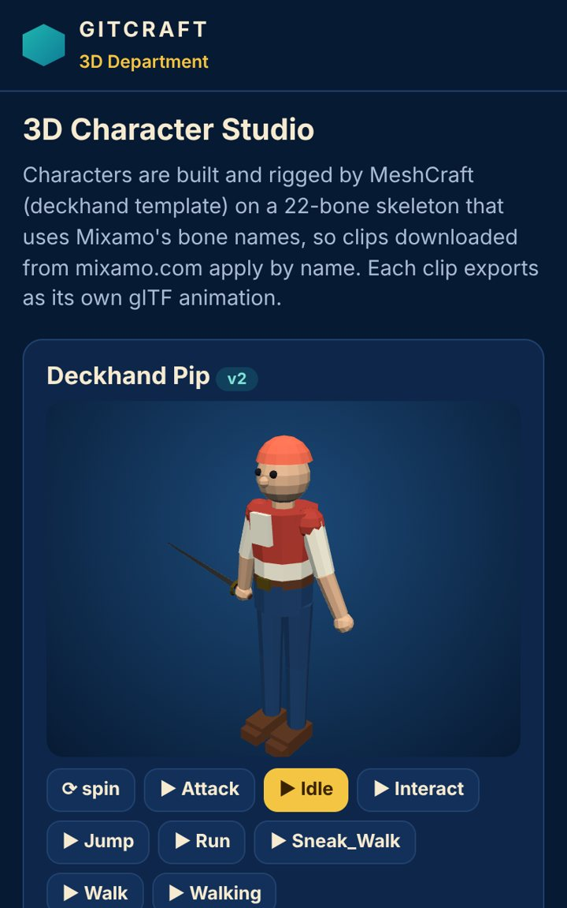
Controls stretch across the desktop window
minor Measured (rendered DOM)seen 1×polish
A 1086-px-wide button on a 1440-px screen: the mobile full-width style was never adapted, so the control looks bloated and the eye travels far.
Fix: Cap form and button widths on desktop (max-width 480-560 px) or lay forms out in a constrained column.
Where and what was measured
7 · Button and control defects
Touch target is too small
major Measured (rendered DOM)seen 29×fix now
228×27 px: under the 44×44 pt Apple HIG minimum (24 px is the WCAG 2.2 floor); thumbs miss and hit neighbours.
Fix: Enlarge the hit area to 44×44 (padding, min-height/min-width, or an ::after hit-area) while keeping the visible glyph size.
Where and what was measured
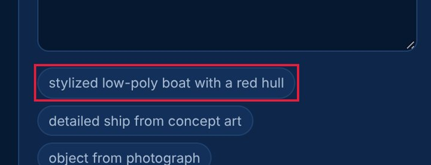
No pressed (active) state
major Measured (rendered DOM)seen 12×fix now
Pressing this control changes nothing visually until the action completes; on touch screens there is no hover, so this is the only immediate confirmation of a tap.
Fix: Add an :active style (darker tone, scale 0.97, or ripple) to every button and link variant.
Where and what was measured
No hover state
minor Measured (rendered DOM)seen 6×next
The pointer over this control changes nothing (colour, shadow, underline), so it does not signal that it is clickable.
Fix: Add a hover style (tone shift, underline, elevation) for every interactive component variant.
Where and what was measured
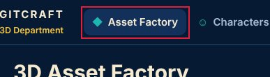
Two primary actions compete
minor Measured (rendered DOM)seen 5×next
'Interact' and 'Attack' are both strongly filled, similar in size and side by side, so neither reads as the main action.
Fix: Keep one filled primary button per group; make the other secondary (outline or tonal).
Where and what was measured
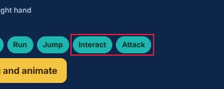
Buttons side by side have different heights
major Measured (rendered DOM)seen 2×next
Buttons in one row are 64, 85 px tall; equivalent controls look like different components and the row looks unbalanced.
Fix: Use one button size per row (a size token: e.g. 44 px on mobile) and change emphasis with fill/outline, not padding.
Where and what was measured
Click target is below 24 px
minor Measured (rendered DOM)seen 2×polish
13×13 px: under the WCAG 2.2 24×24 px minimum target size.
Fix: Enlarge the hit area to 44×44 (padding, min-height/min-width, or an ::after hit-area) while keeping the visible glyph size.
Where and what was measured
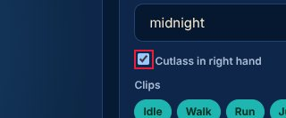
8 · Mobile-specific findings
Focusing a field zooms the page on iPhone
major Measured (rendered DOM)seen 20×fix now
The field's font-size is 15 px; iOS Safari zooms in on any input under 16 px and leaves the page zoomed after typing.
Fix: Use font-size: 16px (1rem) for inputs, selects and textareas on mobile.
Where and what was measured
Controls are too close together
minor Measured (rendered DOM)seen 30×fix now
'stylized low-poly boat with a red hull' and 'detailed ship from concept art' are 7 px apart and at least one is under 44 px: an easy mis-tap.
Fix: Keep at least 8 px between targets (more next to destructive actions), or merge rarely used actions into one overflow menu.
Where and what was measured
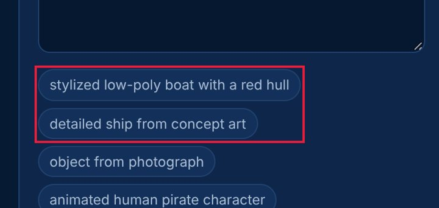
Main action is at the top of the phone screen
minor Measured (rendered DOM)seen 5×next
The primary action sits in the top fifth of a tall phone screen, the hardest zone to reach one-handed.
Fix: Repeat or move the main action to the lower half (a bottom action bar or floating button).
Where and what was measured
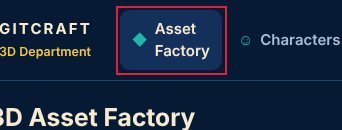
9 · Screenshot gallery
Browser emulation (Playwright + Chromium; iPhone safe areas emulated through CDP). No physical-device evidence was supplied.
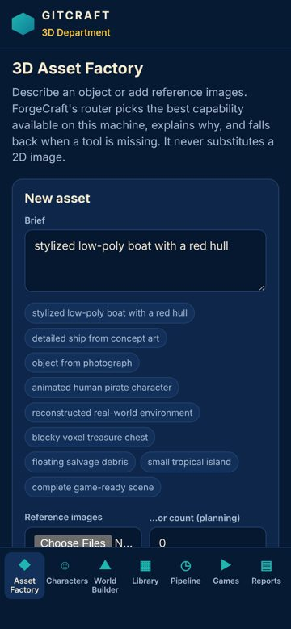
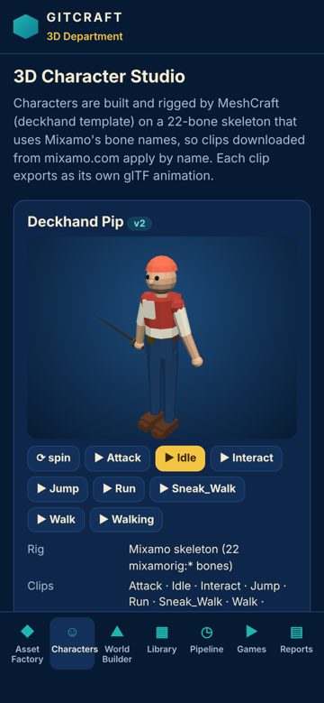
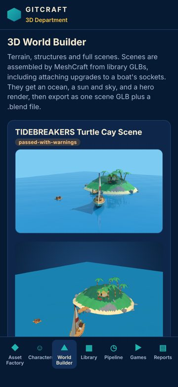
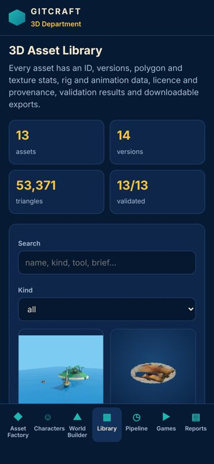
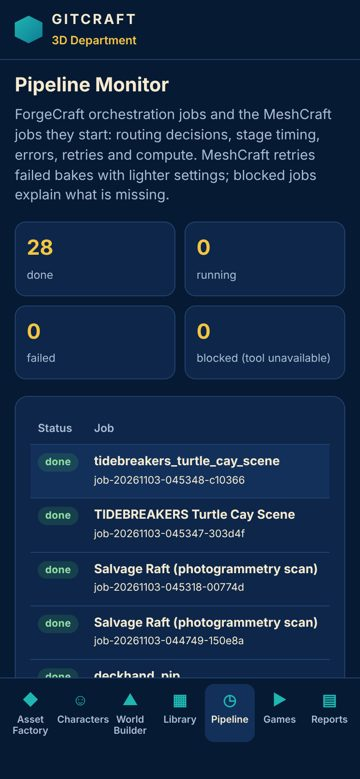

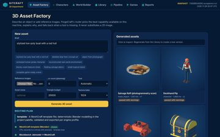
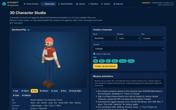
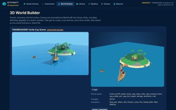
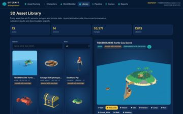
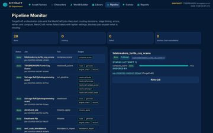

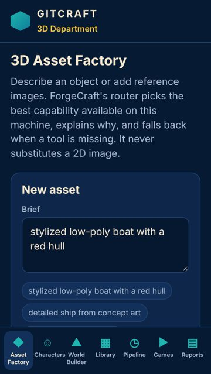
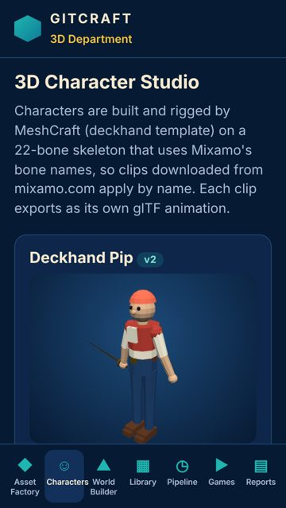
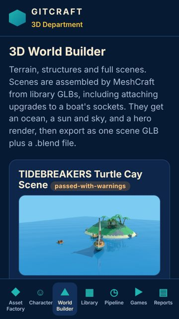
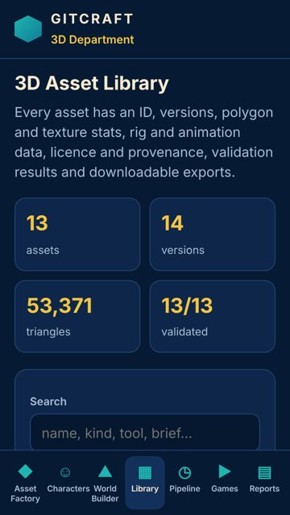
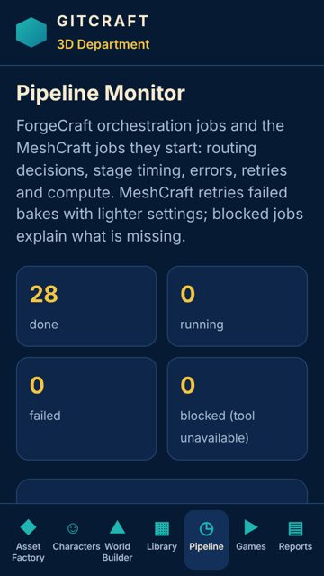

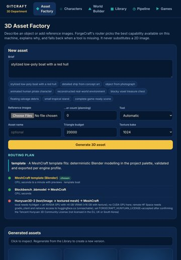
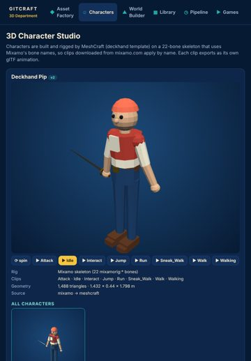
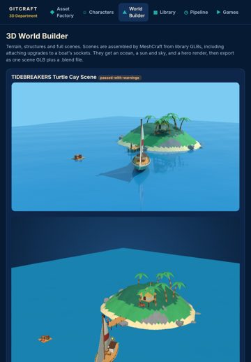
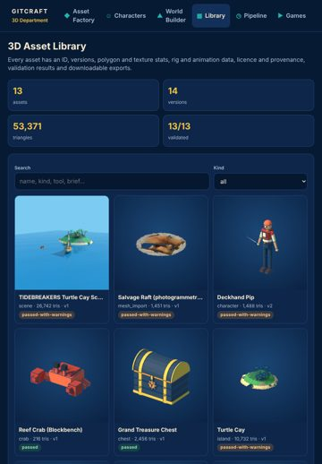
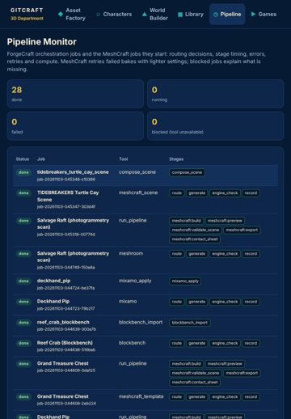

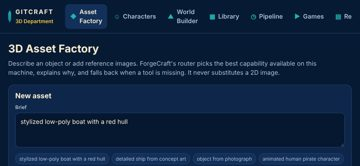
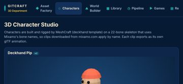
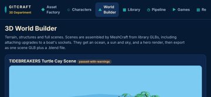
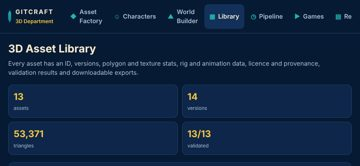
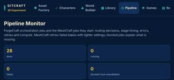

10 · Prioritised improvement plan
| # | Tier | Fix | Severity | Seen | Cost |
|---|---|---|---|---|---|
| 1 | fix now | Text is too small to read comfortably Use at least 12 px (13-14 px preferred) for secondary text and keep hierarchy with weight and colour rather than very small sizes. | major | 31× | low |
| 2 | fix now | Touch target is too small Enlarge the hit area to 44×44 (padding, min-height/min-width, or an ::after hit-area) while keeping the visible glyph size. | major | 29× | low |
| 3 | fix now | Focusing a field zooms the page on iPhone Use font-size: 16px (1rem) for inputs, selects and textareas on mobile. | major | 20× | low |
| 4 | fix now | Controls are too close together Keep at least 8 px between targets (more next to destructive actions), or merge rarely used actions into one overflow menu. | minor | 30× | low |
| 5 | fix now | No pressed (active) state Add an :active style (darker tone, scale 0.97, or ripple) to every button and link variant. | major | 12× | low |
| 6 | fix now | Lines of text are too long Cap text columns at 60-75ch (max-width: 70ch). | minor | 17× | low |
| 7 | fix now | Uneven spacing between related elements Give the container one gap (flex/grid `gap`, or one margin rule for all items) instead of per-item margins. | major | 6× | low |
| 8 | fix now | Text is truncated Allow two lines (line-clamp: 2) for primary labels, or give the label the space the trailing controls take. | minor | 11× | low |
| 9 | fix now | Text is cramped against the edge of its box Give boxed text at least 8 px horizontal and 4 px vertical padding (12-16 px for cards). | minor | 10× | low |
| 10 | fix now | Clickable element is not a real control Use <button> (or <a href>) instead of a clickable <div>/<span>. | major | 4× | low |
| 11 | next | The same heading level has different sizes on different screens Style headings once, globally, from the type scale. | minor | 6× | low |
| 12 | next | No hover state Add a hover style (tone shift, underline, elevation) for every interactive component variant. | minor | 6× | low |
| 13 | next | Spacing does not follow a consistent scale Adopt a spacing scale (4/8-px steps: 4, 8, 12, 16, 24, 32) as tokens and replace one-off values with the nearest step. | minor | 10× | medium |
| 14 | next | Two primary actions compete Keep one filled primary button per group; make the other secondary (outline or tonal). | minor | 5× | low |
| 15 | next | Buttons side by side have different heights Use one button size per row (a size token: e.g. 44 px on mobile) and change emphasis with fill/outline, not padding. | major | 2× | low |
Journeys
| Journey | Viewport | Result | Taps | Confirmations | Feedback ms |
|---|---|---|---|---|---|
| reach characters auto | iphone17 | ok | 1 | 0 | 117 |
| reach world-builder auto | iphone17 | ok | 1 | 0 | 113 |
| reach library auto | iphone17 | ok | 1 | 0 | 116 |
| reach pipeline auto | iphone17 | ok | 1 | 0 | 134 |
| reach games auto | iphone17 | ok | 1 | 0 | None |
| reach characters auto | desktop | ok | 1 | 0 | 108 |
| reach world-builder auto | desktop | ok | 1 | 0 | 100 |
| reach library auto | desktop | ok | 1 | 0 | 116 |
| reach pipeline auto | desktop | ok | 1 | 0 | 106 |
| reach games auto | desktop | ok | 1 | 0 | None |
Before / after
Comparable: yes — same method, same screens, viewports and journeys; deltas use only metrics measured in both runs
| Before | After | Δ (same metrics) | |
|---|---|---|---|
| Visual Quality | 70.2 | 74.4 | +4.2 |
| Usability | 81.9 | 82.1 | +0.2 |
| Consistency | 45.6 | 50.7 | +5.1 |
| Overall | 65.9 | 69.1 | +3.2 |
Resolved 1 · persisting 21 · new 0 · regressions 0 · coverage lost: none
- ✅ Page scrolls sideways (horizontal overflow)
Evidence and limits
- Every viewport is browser emulation (Playwright + Chromium 153.0.8010.12); iPhone sizes are CSS pixels and safe-area insets are emulated through CDP (Emulation.setSafeAreaInsetsOverride). Safari-specific rendering (WebKit), the real on-screen keyboard and physical reach are not reproduced.
- Browser chrome: the first screen is re-measured with the viewport shortened by 120 px (Safari's toolbars); dynamic toolbar collapse is not reproduced.
- Keyboard interference: fields that would zoom on focus (font-size < 16 px) are measured; whether the on-screen keyboard covers a field is not testable in emulation.
- Hover/pressed/focus states are sampled once per visual variant of control; focus visibility comes from real Tab presses (desktop).
- Canvas-drawn interfaces (games): the DOM does not describe what is drawn, so DOM-geometry metrics cover only the HTML overlay (HUD, menus); use judgements for the canvas.
- No physical-device evidence: findings are emulation results, not device results.